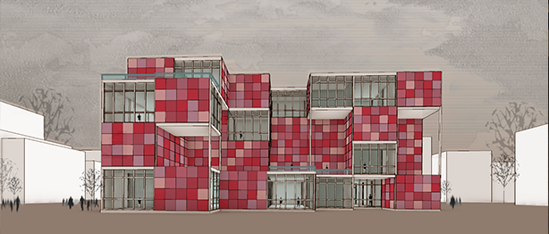
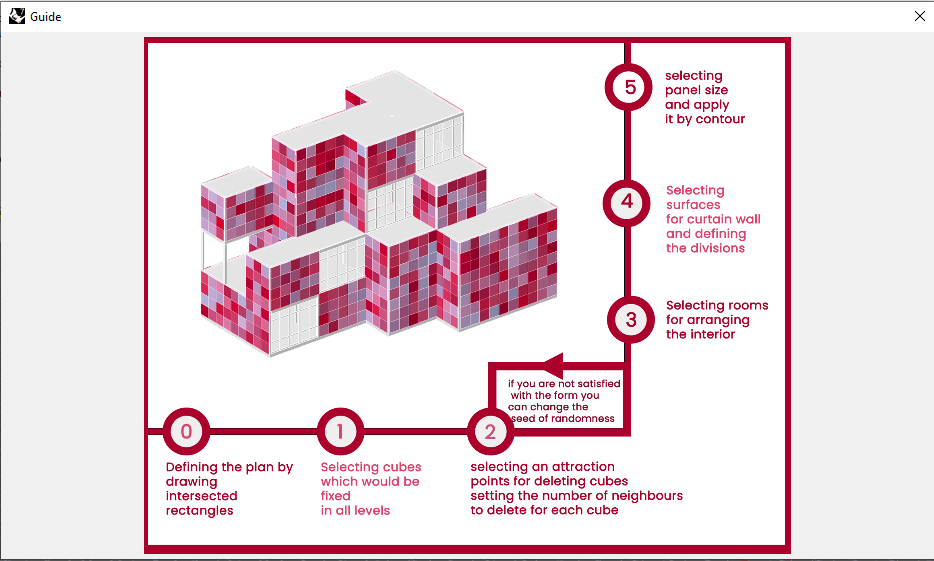

In this project, the usage of cellular automata is intended to produce new
architectural forms while also promoting a better comprehension of the design
process itself. Through a system in which advanced global behaviors emerge from
local interactions between elements (cells), designers can investigate a wide range
of design options that are naturally tailored to contextual and functional
constraints.
▾


This is the process of creating a variation